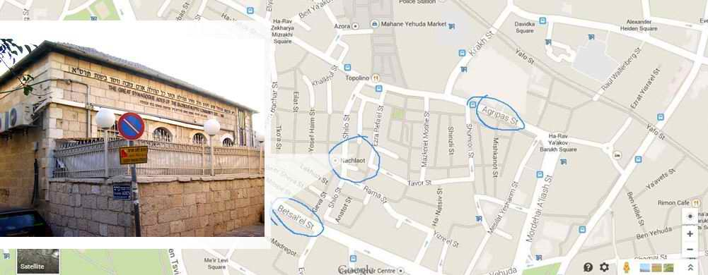
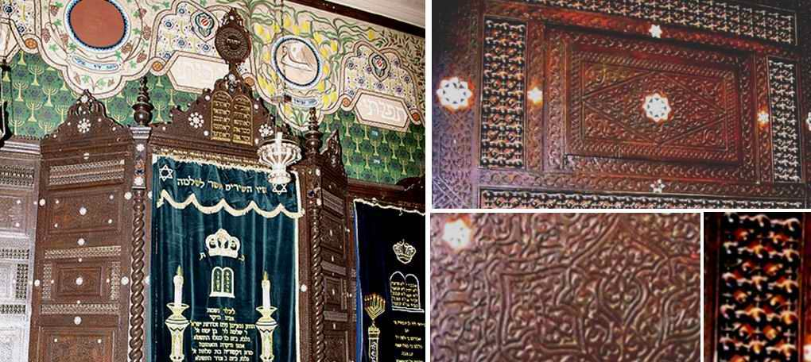

Начало СИОНИСТСКОГО ИСКУССТВА. Часть II
БЕЙТ-КНЕССЕТ (ивр. – дом собрания, то же, что синагога – греч.) общины репатриантов халаби, расположенный в иерусалимском районе Нахлаот, был основан в 1901 году.

Первую часть этой статьи смотрите здесь

Построенный из иерусалимского камня подобно большинству зданий в столице Израиля, он занимает почетное место и считается одним из красивейших среди синагог Иерусалима.
Арон а-кодеш (ковчег для Торы) синагоги, выполненный в Дамаске (Сирия) из древесины ореха, сплошь покрыт замысловатой геометрической орнаментальной резьбой с инкрустациями перламутра и жемчуга.

Солидный возраст – 113 лет, тем не менее не дает ей основание называться старейшей. Известны например, другие иерусалимские синагоги более почтенного возраста: Синагога Элияху hа-Нави (Синагога Илии Пророка) 16-го века, Синагога Йоханана Бен Закай 17-го века, Истамбульская Синагога и Синагоги hа-Эмцаи (Средняя синагога) 18-го века.
Но традиции сирийского синагогального молитвенного песнопения уходят своими корнями в глубокую древность и делают ее центром ХАЗАНУТ ХАЛЕБИ в Израиле.
Халеб (арам., итал. - Aleppo) – крупнейший город Сирии, население которого превышает два милиона жителей. На протяжении многих веков Алеппо был крупнейшим городом в Великой Сирии.
Алеппо – один из самых древних постоянно населенных городов мира. Раскопки в Телль ас-Сауда и Телль аль-Ансари (сегодня это юг старой части города) говорят о заселении по крайней мере во второй половине III тысячелетия до нашей эры.
С незапамятных времен в Сирии была большая еврейская община. В первые века новой эры наряду с ортодоксальными синагогами, в ней было немало мессианских и христианских общин.
Бейт-кнессет Адес привлекает много посетителей из Израиля и за рубежом, из-за уникальности своего литургического стиля халаби.
Адес является одной из всего двух синагог в Иерусалиме (и, возможно, в мире), который поддерживает древнюю традицию СЛИХОТ и БАКАШОТ (ивр. – спец. моления).
Стиль молитвенного песнопения евреев халеби, который практикуется в синагоге Адес оказал большое влияние на развитие стиля хазанут, известного сегодня как йерушальми-сфаради.
Многие ныне известные канторы специально посещали эту синагогу, чтобы научиться и освоить ХАЗАНУТ халаби.
пение БАКАШОТ в сопровождении муз.инструментов слушайте здесь
***
Есть еще нечто, что заинтересовало меня в этой синагоге – сохранившаяся фреска, покрывающая все стены этого молитвенного дома. Она на 11 лет моложе самого здания, но именно и прежде всего она воспринимается исследователями, как начало сионистского искусства и первое монументальное сионистское произведение искусства. Она внесена в реестр культурного наследия Израиля.
Об этом поговорим отдельно в следующей части.
Начало этой статьи смотри здесь
автор Эфраим Калиш /TORAART/